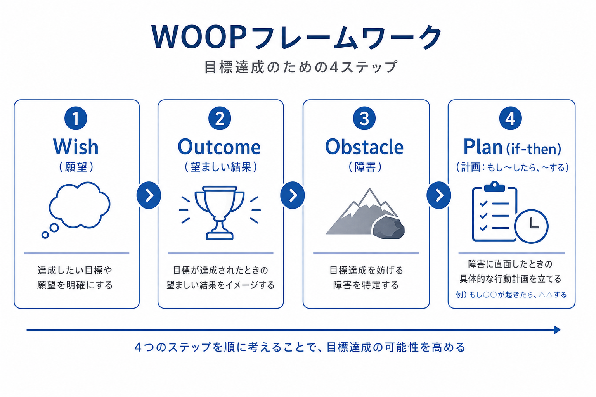

講座で印象的だったのは、「自分で思い出す」のが、直感的に皆さんが嫌いだという指摘でした。ノートを読み返す、資料を眺める——こうした「再読」は楽に感じますが、脳にとっては定着にあまり効きません。一方、何も見ずに自分の記憶だけで答えを引き出す「思い出す」作業は負担が大きく、だからこそ学習効果が高いのです。
また、テストは先生からの定着検証をするためのものだという視点も新鮮でした。テストは「点数をつけるための罰」ではなく、「本当に身についているかを確認する道具」です。評価の場ではなく、学びの質を測る鏡として捉え直すことが大切です。
そして、テストに合格するためには、内容をよく理解し、自分に自分で出題し、問題を自分で考え出すことが推奨されました。教科書の見出しだけを見て「これについて何が言えるか」と自問する、逆に問題を作ってみる——こうした能動的な学びが、知識を「自分のもの」に変えていきます。
講座では、目標達成のためのフレームワーク「WOOP」が紹介されました。

特に印象的だったのは、WOOPの「P」にはパントマイムが含まれるという点です。障害が起きた場面を、言葉ではなく身体で「演じる」ことで、実行前に脳内リハーサルができます。たとえば「会議で意見を言えなかった」という障害を、実際にその場面を無言で再現してみる——こうした身体感覚を伴う練習が、いざ本番のときの行動変容につながるのです。
講座では「この世界は階段型ドミノ」という比喩も紹介されました。一気に大きな変化が起きるのではなく、小さな成功が次の成功を連鎖的に引き起こす——まるで階段状に並んだドミノが、一つ倒れると次へと波及していくように。
経営においても同じです。大きな目標を一度に達成しようとするのではなく、今日できる小さな一歩を積み重ねる。一つの習慣が定着すれば、次の習慣が生まれやすくなる。組織改善も、まず一つの現場から始め、その成功体験が他部門へ広がっていく——そんな「階段型」の成長モデルが、持続可能な変化をもたらします。
講座の締めくくりで、とても納得のいく比喩がありました。モチベーションは天気と同じで、今日晴れても明日は雨かもしれない——人のモチベーション維持はとても難しい、ということです。
「やる気が出たときだけ頑張る」では、天気の良い日しか前に進めません。ではどうするか。講座で示された答えは、気分に頼らない仕組みを設計することでした。
天気が悪い日でも、傘を持っていれば雨の中を歩ける。モチベーションが下がった日でも、仕組みがあれば前に進める——そういう「傘」のような設計が、長期的な成長には欠かせません。
本日の講座から、学習は「楽な再読」ではなく「負担のある思い出し」、目標は「願い」だけでなく「障害と計画」まで含めて設計し、成長は「一気に」ではなく「階段型ドミノ」のように連鎖させる——という一貫したメッセージを受け取りました。
ニューライフ・デベロップメント・グループとしても、社内研修や人材育成において、定着を意識した学び方と、モチベーションに依存しない仕組みづくりを実践していきたいと強く感じた一日でした。